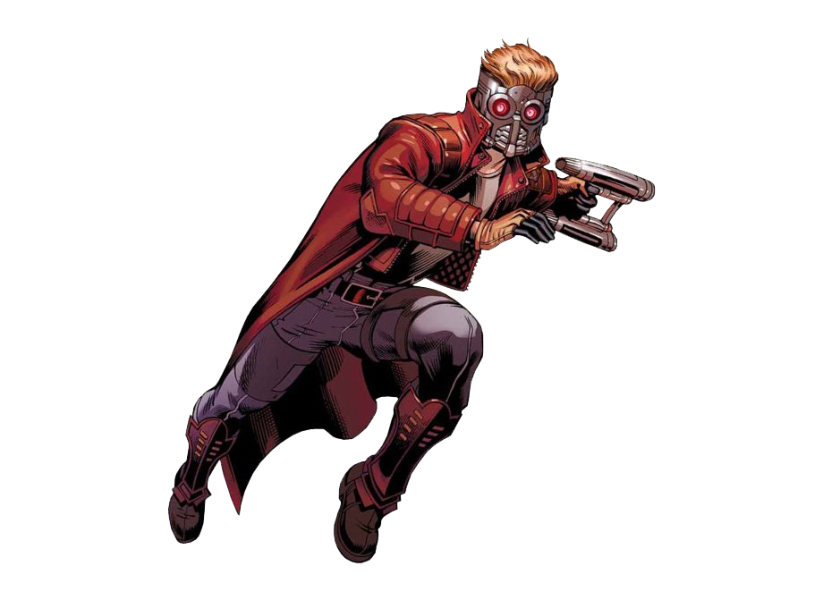

Gamer, Retro Lover, Tech savvy
Welcome to my site 🎸
Got an issue with your computer or game console? 🖥 I may be able to help!

About Me
Hello, my name is Jose Gonzalez and I'm currently a student at South Texas College studying in IT. In my free time, I enjoy reading literature and playing video games of all kinds (Retro, Arcade, PC, etc). I like to consider myself knowledgable with computers and tech in general and I'm happy to answer any questions that may concern relating to it.